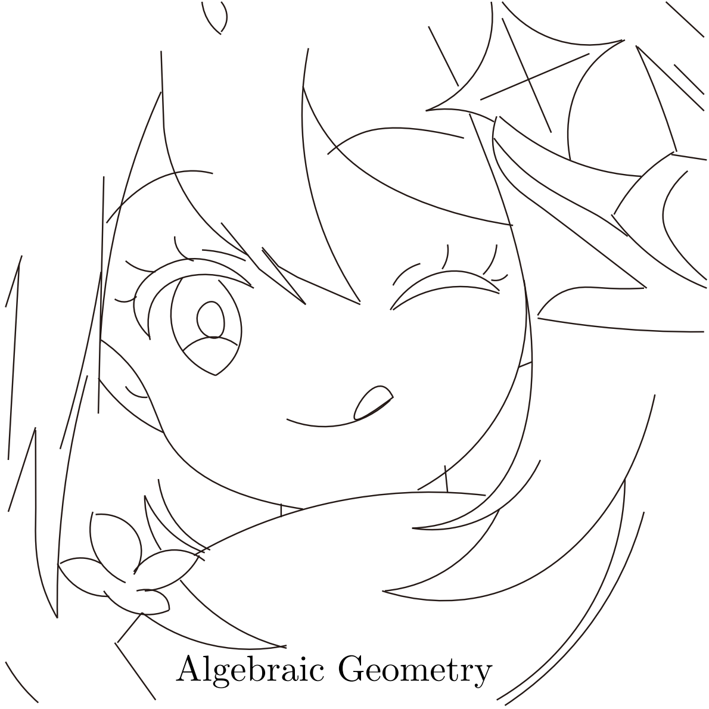

没错, 这张头图是用 latex 中的 tikz 画的:)
放在这里让大伙再欣赏欣赏:

但是, 牛魔, Stack 居然没有提供缩放图片的方法, 让我们看看他是怎么说的. 他说:
Inserting external images is supported, but it is not recommended.
Features like image gallery and image zooming will not work with external images. Those feature needs to know the image's dimensions, which is not possible with external images.
orz
那以后如果想搞地理志一样的东西, 得慢慢来.
简单介绍一下搞法吧. 第一步, 将图片导入 Photoshop, 然后用弯线钢笔照着描出来路径.
第二步, 将路径文件导出. 如果可以成为 SVG 文件, 那自然是最好的. 如果不行, 先保存为.ai, 然后用 Adobe Illustrator 搞成.svg.
第三步, 如果你不嫌麻烦, 可以直接读.svg, 然后照着慢慢搞. 库"hobby"给出了实现弯线钢笔的方法. 如果你嫌麻烦, 可以用脚本 svg2tikz.
第四步, 在.tex 中运行, 就能得到这样的好东西了[给心心]
不收徒